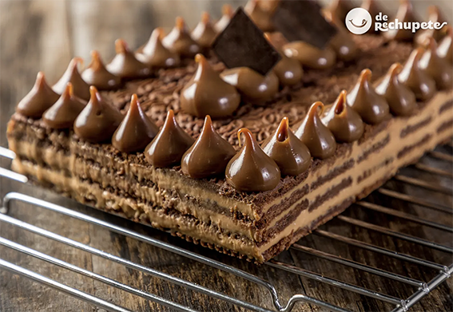

Recetas dulces, sencillas y económicas
Chocotorta

Ingredientes
- 2 paquetes de galletitas "Chocolinas"
- 600g. de queso crema
- 600g. de dulce de leche
- 2 cucharadas de café soluble
- 200ml de agua caliente
- 100g. de chocolate para decorar
Preparación
- En un bowl batir juntos, el queso y el dulce de leche hasta conseguir una crema lisa y homogénea. Para que quede mejor, utilizar una batidora eléctrica. Guardar tapado en la heladera.
- Mojar las galletitas en el café (previamente disuelto en el agua) durante 3 o 4 segundos, y ubicarlas una alado de la otra, generando una base en el molde (preferentemente cuadrado).
- Cubrir la base anterior con una delgada capa de la mezcla de queso y dulce de leche.
- Repetir el proceso hasta tener al menos cuatro capas. Finalizar la última capa con la mezcla de queso y dulce de leche.
- Guardar en el freezer al menos 4 horas antes de consumirla.